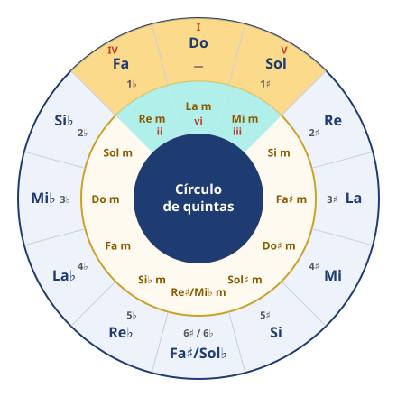

Módulo 5: Armonía funcional aplicada al teclado
Entender por qué suena lo que suena.
Los acordes tienen papeles, como en una historia: la tónica (I) es «casa», la subdominante (IV) es «salir de paseo» y la dominante (V) es «querer volver a casa».
Grados y funciones
Cada acorde de una tonalidad tiene una función: reposo, alejamiento o tensión que pide resolver.
| Grado (Do mayor) | Acorde | Función |
|---|---|---|
| I | C (Do mayor) | Tónica: reposo |
| ii | Dm (Re menor) | Subdominante |
| iii | Em (Mi menor) | Tónica (débil) |
| IV | F (Fa mayor) | Subdominante: alejamiento |
| V / V7 | G / G7 (Sol 7) | Dominante: tensión que resuelve en I |
| vi | Am (La menor) | Tónica relativa |
| vii° | Bdim (Si disminuido) | Dominante |
1. Cadencias
- 🎯 Perfecta (auténtica): V–I. Conclusión total.
- 🎯 Plagal: IV–I. El «amén».
- 🎯 Semicadencia: termina en V. Suspense, pide continuación.
- 🎯 Rota (de engaño): V–vi. Sorpresa: esperas I y suena vi.
🎼 Cadencias: I–IV–V7–I y I–vi–ii7–V7–I en Do mayor
Observa la conducción de voces: las notas comunes se mantienen y las demás se mueven por grado conjunto.
2. Conducción de voces
- 🔗 Mantén las notas comunes entre acordes.
- 🔗 Mueve las demás por el camino más corto (grado conjunto).
- 🔗 La sensible (Si en Do mayor) sube a la tónica.
- 🔗 La 7.ª del acorde de dominante (Fa en Sol7) baja por grado.
3. Cifrado americano
Letras: A = La, B = Si, C = Do, D = Re, E = Mi, F = Fa, G = Sol. «m» = menor; «7» = séptima menor; «maj7» = séptima mayor; «/» = bajo distinto (C/E = Do con Mi en el bajo).
La armonía como una historia
Imagina que cada acorde es un lugar. La tónica (I) es tu casa: allí todo está en reposo. La subdominante (IV) es salir de paseo: te alejas, pero tranquilo. La dominante (V) es el camino de vuelta: notas que falta algo hasta que llegas a casa. Por eso casi todas las canciones terminan V → I.
¿Por qué el V «quiere» ir al I? Porque contiene la sensible (en Do mayor, Si), que está a solo un semitono de la tónica (Do) y «tira» hacia ella. Si además añades la 7.ª (Fa), esta «cae» al Mi. Dos notas tirando hacia el acorde de casa: tensión que pide resolverse.
🎼 Cadencia I–IV–V7–I transportada a Sol mayor
Son las mismas «formas» de la mano que en Do, desplazadas: I, IV y V7 siempre suenan con la misma función.
La tonalidad, a fondo
Una tonalidad es una forma de organizar las notas alrededor de una nota principal, la tónica, que funciona como un imán: todas las demás tienen más o menos «tensión» respecto a ella y la música tiende a volver a ella para descansar. Una tonalidad se nombra con su tónica y su modo (mayor o menor): «Re mayor», «Sol menor».
| Concepto | Qué es | Ejemplo |
|---|---|---|
| Escala | Las notas de la tonalidad, ordenadas de grave a agudo | Sol – La – Si – Do – Re – Mi – Fa♯ – Sol |
| Armadura | La forma de escribir las alteraciones fijas al principio del pentagrama | Un sostenido (Fa♯) |
| Tonalidad | La «gravedad»: qué nota es la casa y qué papel tiene cada acorde | Sol mayor: Sol es la casa, Re la tensión |
Por eso una misma armadura sirve para dos tonalidades (las relativas): las notas son las mismas, pero la casa es distinta.
1. Los nombres de los grados
| Grado | Nombre | En Do mayor | Por qué se llama así |
|---|---|---|---|
| I | Tónica | Do | La nota principal, la que da nombre a la tonalidad |
| II | Supertónica | Re | Está justo encima de la tónica |
| III | Mediante | Mi | Está a medio camino entre la tónica y la dominante |
| IV | Subdominante | Fa | Está una 5.ª por debajo de la tónica: es la «dominante de abajo» |
| V | Dominante | Sol | Domina la tonalidad: es la nota más importante después de la tónica |
| VI | Superdominante (o submediante) | La | Está justo encima de la dominante |
| VII | Sensible | Si | Está a un semitono de la tónica y «siente» su atracción: quiere subir a ella |
En la escala menor natural el VII está a un tono de la tónica (Sol en La menor) y se llama subtónica: ya no tira con tanta fuerza hacia la tónica. Por eso la escala menor armónica lo sube un semitono.
2. Mayor y menor: qué cambia
| Grado | 1 | 2 | 3 | 4 | 5 | 6 | 7 |
|---|---|---|---|---|---|---|---|
| Do mayor | Do | Re | Mi | Fa | Sol | La | Si |
| Do menor natural | Do | Re | Mi♭ | Fa | Sol | La♭ | Si♭ |
| Do menor armónica | Do | Re | Mi♭ | Fa | Sol | La♭ | Si |
Lo que define el modo es la 3.ª (Mi o Mi♭). ¿Y por qué en menor se sube el 7.º grado? Sin él, el acorde del V grado sería menor (Sol–Si♭–Re) y la cadencia V–i sonaría débil. Con Si natural, el V es mayor (Sol–Si–Re) y la sensible empuja hacia la tónica. Por eso, en las obras en tonalidad menor, el 7.º grado aparece como alteración accidental una y otra vez: es la pista más fiable para reconocerlas.
3. ¿En qué tonalidad está esta obra? Método en cinco pasos
- Mira la armadura: te da dos candidatas.💡 Cómo se hace: aplica las reglas del módulo 3 (último sostenido + semitono, o penúltimo bemol) para la mayor, y baja 3 semitonos para su relativa menor. Sin alteraciones: Do mayor o La menor.
- Mira el final.💡 Cómo se hace: casi todas las obras terminan en la tónica: fíjate en la última nota del bajo y en el último acorde. Si acaban en Do, apunta a Do mayor; si acaban en La, a La menor.
- Mira el principio.💡 Cómo se hace: el primer compás suele presentar el acorde de tónica, o la dominante que lleva a ella. Busca las notas del acorde de cada candidata en la primera frase.
- Busca la sensible de la menor como alteración accidental.💡 Cómo se hace: es el 7.º grado de la menor subido un semitono: Sol♯ en La menor, Re♯ en Mi menor, Do♯ en Re menor, Fa♯ en Sol menor. Si aparece varias veces, la obra está en menor.
- Confírmalo con el oído.💡 Cómo se hace: toca el acorde de tónica de tu candidata justo después del final de la obra. Si suena a «estar en casa», has acertado; si suena a algo nuevo, prueba la otra.
Escucha estas dos melodías. Las dos están escritas sin armadura, pero no están en la misma tonalidad. Aplica el método antes de leer la explicación de debajo:
🎼 Misma armadura, dos tonalidades (1): Do mayor
Empieza y termina en Do, los acordes giran alrededor de Do y no aparece ningún Sol♯: es Do mayor.
🎼 Misma armadura, dos tonalidades (2): La menor
Empieza y termina en La y aparece Sol♯ (la sensible de La menor) como alteración accidental: es La menor, la relativa de Do mayor.
🧩 La melodía B no tiene armadura, empieza y termina en La y aparece Sol♯. ¿En qué tonalidad está?
4. La modulación: cambiar de casa
Una obra larga no se queda siempre en la misma tonalidad: a menudo modula, es decir, se traslada a otra durante un tiempo. Cómo se reconoce:
- 🔀 Aparece una alteración nueva que se repite (por ejemplo, Fa♯ una y otra vez en una obra en Do mayor).
- 🔀 Hay una cadencia V–I en la tonalidad nueva (D7 → G en el ejemplo de abajo).
- 🔀 A veces el compositor cambia la armadura tras una doble barra; si la cambia solo con alteraciones accidentales, la modulación es más breve.
- 🔀 Los destinos más habituales son la dominante (en las obras mayores) y la relativa mayor (en las menores).
🎼 Una modulación: de Do mayor a Sol mayor
A partir del compás 3 aparece Fa♯ una y otra vez y la frase cierra con D7 → G (V7 → I de Sol): la música ha cambiado de «casa».
5. Los tonos vecinos y el círculo como mapa de la armonía

Fíjate en la figura: los acordes de una tonalidad son una porción de tres casillas del círculo. Por fuera, IV – I – V; por dentro, sus relativas ii – vi – iii. Esas cinco tonalidades que rodean a la tuya son sus tonos vecinos: se diferencian en una alteración como mucho, y por eso modular a ellas suena natural.
| Si quieres… | En el círculo | Ejemplo en Do mayor |
|---|---|---|
| Encontrar la dominante (V) | Un paso a la derecha | Sol |
| Encontrar la subdominante (IV) | Un paso a la izquierda | Fa |
| Resolver una tensión (V → I) | Un paso hacia la izquierda | Sol7 → Do |
| Hacer un ii–V–I | Tres pasos seguidos hacia la izquierda | Re m7 → Sol7 → Do |
| Encadenar dominantes | Varios pasos seguidos hacia la izquierda, todos con 7.ª | Mi7 → La7 → Re7 → Sol7 → Do (muy usado en el ragtime y el jazz) |
| Preparar cualquier acorde (dominante secundaria) | Toca antes el acorde que está un paso a su derecha, mayor y con 7.ª | La7 → Re m · Mi7 → La m |
🧩 En Sol mayor, ¿qué acorde es la subdominante (IV)?
🧩 Una obra en Do mayor empieza a usar Fa♯ y hace una cadencia D7 → G. ¿Qué ha ocurrido?
6. Transportar: la misma música en otra tonalidad
- Escribe la progresión en grados.💡 Cómo se hace: pon el número romano de cada acorde en la tonalidad original: Do – La m – Fa – Sol en Do mayor = I – vi – IV – V. Los grados son la «receta» y valen para cualquier tonalidad.
- Busca los acordes de la tonalidad nueva en el círculo.💡 Cómo se hace: localiza la tónica nueva y su porción: a la izquierda el IV, a la derecha el V y debajo las tres relativas (ii, vi, iii). En Re mayor: IV = Sol, I = Re, V = La; ii = Mi m, vi = Si m, iii = Fa♯ m.
- Sustituye cada grado por su acorde nuevo.💡 Cómo se hace: I – vi – IV – V en Re mayor = Re – Si m – Sol – La. Comprueba la tabla de abajo.
- Toca y escucha.💡 Cómo se hace: la progresión transportada debe dar exactamente la misma sensación que la original, solo más aguda o más grave. Si un acorde suena «raro», revisa si es mayor o menor.
| Tonalidad | I | vi | IV | V |
|---|---|---|---|---|
| Do mayor | Do | La m | Fa | Sol |
| Sol mayor | Sol | Mi m | Do | Re |
| Re mayor | Re | Si m | Sol | La |
| Fa mayor | Fa | Re m | Si♭ | Do |
🧩 ¿Qué acorde prepara a Re menor como dominante secundaria?
⚠️ Errores frecuentes y cómo corregirlos
| Lo que pasa | Por qué | Cómo corregirlo |
|---|---|---|
| Digo la tonalidad solo mirando la armadura | Olvido que hay dos candidatas | Mira siempre el final y busca la sensible de la menor |
| Confundo relativa y homónima | Los nombres se parecen | Relativa = mismas notas (misma armadura); homónima = misma tónica |
| Al transportar me sale un acorde mayor que debía ser menor | Copio solo la letra del acorde | Transporta los grados con su tipo: en mayor, ii, iii y vi son siempre menores |
| No noto cuándo modula | Leo las notas y no las alteraciones | Subraya con lápiz las alteraciones accidentales que se repiten y busca la cadencia que las confirma |
🗓️ Entrenar el oído armónico (5 minutos)
- Toca I–IV–V7–I en Do y escucha cómo el último acorde «cierra».
- Toca I–IV–V7 y para: notarás que la música se queda «en el aire» (semicadencia).
- Toca I–IV–V7–vi: sorpresa, es la cadencia rota.
- Pide a alguien que toque una de las tres y adivina cuál es.💡 Cómo se hace: si no tienes a nadie, grábate en el móvil tocando las tres cadencias varias veces en un orden al azar (sin decirlo en voz alta), espera un día y escucha la grabación anotando cuál crees que es cada una. Pista: si suena a «punto final», es perfecta; si se queda «en el aire», semicadencia; si sorprende, rota.
- Repite todo en Sol mayor con la partitura de arriba.
⚠️ Errores frecuentes y cómo corregirlos
| Lo que pasa | Por qué | Cómo corregirlo |
|---|---|---|
| Muevo la mano entera de un acorde a otro | Pienso cada acorde por separado | Busca las notas comunes y déjalas quietas; mueve solo las demás |
| El V7 suena «raro» | Falta la 7.ª o la sensible | Comprueba que el acorde tiene la sensible (Si en Do) y la 7.ª (Fa) |
| No sé en qué tonalidad estoy | No miro la armadura ni el final | Mira la armadura y el último acorde de la obra: suele ser la tónica |
🧩 En Do mayor, ¿cuál es el acorde de dominante con séptima (V7)?
🧩 Esperas el acorde de Do al final y suena La menor. ¿Qué cadencia es?
🎹 Transporte
Toca la cadencia I–IV–V7–I del ejemplo en Sol mayor y en Fa mayor. Escribe los acordes que usas.